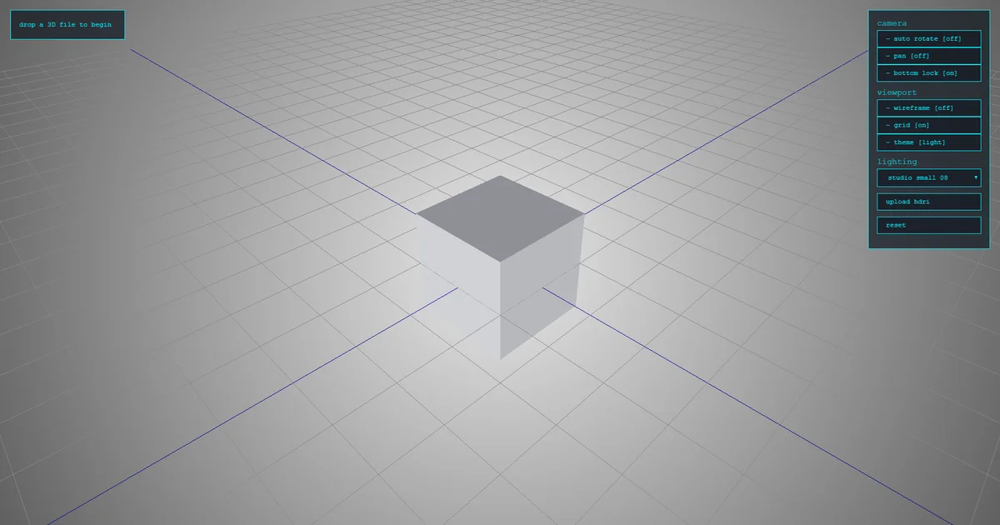

[03] Tool · case study
Asset Viewer
A 3D model viewer that runs on your own machine. Drop in a model and inspect it: no uploads, no accounts.


What it does
Drag in a GLB, GLTF, FBX or OBJ and it loads straight away. It shows the mesh stats you usually go looking for and gives you the basic inspection tools: orbit and pan, wireframe, a grid and HDRI lighting with presets or your own HDRI.
It ships as a standalone Windows app, so nobody needs Python installed to use it.
How it's built
- renderThree.js does the 3D: loading the formats, lighting, orbit controls, wireframe and grid.
- serveA small Flask server hosts the viewer locally, so files never leave the machine.
- wrapPyQt5's QWebEngine turns it into a desktop window instead of a browser tab.
- shipPyInstaller packages everything (the viewer, HDRIs and sample models) into a folder with an .exe.
Features
- formats
- GLB · GLTF · FBX · OBJ
- stats
- objects, vertices, faces, triangles, file size
- lighting
- HDRI presets or upload your own
- view
- orbit, pan, auto-rotate, wireframe, grid
- themes
- light and dark